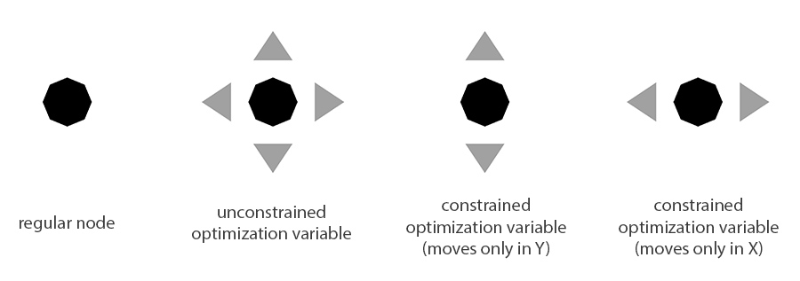

This is a design and optimization tool for trusses that uses real-time simulation feedback to inform the design process.
Trusses are assemblies of rigid beams connected at "nodes" that form the backbone of buildings, bridges, and other structures.
This tool uses Finite Element Analysis to numerically solve for internal forces in 2D truss structures assuming only axial forces in beams.
The beams have high stiffness (EA = 50 GPa m2) so that elastic deformations of the structure are negligible.
The advantage of this numerical approach over analytical approaches (such as Method of Joints) is that it generalizes to statically indeterminate structures.
Real-time simulation feedback shows the user how to adjust the positions of the nodes to minimize the volume of material used in the beams of the truss (proportional to Σ | Fi Li | for all beams i in the structure).
As you drag a node, a pink arrow indicates the direction of the gradient around the node's current position.
Move nodes in the direction of the gradient to minimize the total material volume.
The gradient is calculated numerically by sampling the space around the selected node's current position, the step size of this sampling is controlled by "Gradient Step Size".
Add nodes as variables to an automated optimization process either as single nodes or in mirrored pairs by holding down Shift, selecting a single node or a pair of nodes, and hitting Enter.
Once added, you may constrain their x/y position or change the axis of symmetry in your structure through the controls under "Optimization Variables".
Click "Auto Optimize" to begin the automated optimization process.
This process will incrementally adjust the positions of the nodes to minimize the total volume of the beams in the structure until further gains are less than "Gradient Tolerance".
This optimization process (gradient descent) is not guaranteed to find a globally optimal solution; run the optimization process from many initial starting configurations to find other local minima.
Instructions:
Scroll to zoom, right click and drag to pan.
The force on each node is indicated by a grey arrow. Drag on force vectors to change the applied force at each node. Right click on a force vector to type in a value for it. Click on the "Add Force" button and select a node to add an external force to it.
Drag nodes to move them, right click to type in an exact position for them.
Fixed nodes are indicated with a black square, click on the "Add/Remove Fixed Nodes" button and select a node to toggle its fixed state.
Double click on a beam to add a node to it, double click on a node to begin drawing a new beam.
Click the "Delete Mode" button and select a node, beam, or external force to remove it.
Toggle between viewing geometry, length, internal forces, and tension/compression of beams in the structure using the controls on the left. Mouse over a beam to get more detailed information about it.
Lock external force magnitudes, topology (the connectivity of nodes and beams), and the positions of the nodes by selecting the checkboxes in the upper left.
Click "Download Design Info" to save a text file containing geometric information about the current structure.
This menu allows you to configure nodes as variables in the automated optimization process and constrain their motion.
Instructions:
Hold Shift and select a node - you will see magenta selection arrows appear around it.
Hit Enter to add the selected node as an optimization variable - you will see it appear in the menu under Opt Variables / Constraints
You may also add two nodes as symmetrically-linked variables.
In this case you select both nodes while holding down the Shift key and press Enter.
Symmetrically-linked variables are constrained to be symmetric across a line of symmetry (blue dotted line), whose angle is defined by Symmetry Angle.
(You will only see the symmetry line when you have symmetrically-linked variables present).
Constrain the x or y position of an optimization variable by selecting the appropriate checkbox next to it in the dropdown menu.
Constraints are illustrated by the arrows around the node on the canvas.

Click and drag nodes to verify that your constraints are set up correctly. You can also change the visibility of the constraint arrows by selecting each of the variables in the dropdown menu.